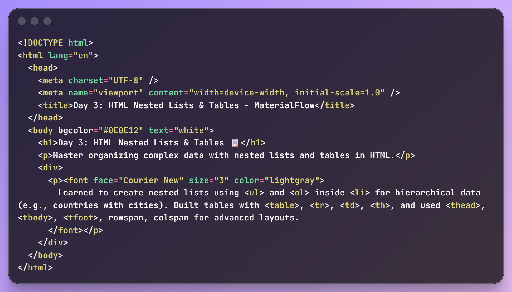
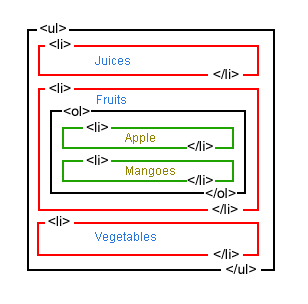
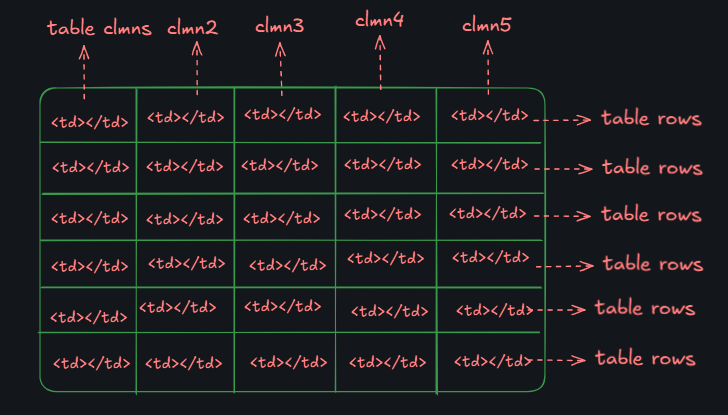

📘 Day 3: Nested Lists and Tables - Organize Complex Data in HTML

Welcome to Day 3 of MaterialFlow's lecture series! This
session explores nested lists and tables in HTML, essential
for organizing complex data. You'll learn to create
multi-level lists and tables with rows, columns, headers, and
advanced attributes like rowspan and colspan. With 10 detailed
examples, practical tips, and debugging strategies, this guide
equips you to build semantically meaningful, accessible
layouts for web pages. Dive in and master data organization!
🚀
Progress: 60% (Day 3 of 06)
Expanded Introduction
Nested lists and tables are vital for organizing complex data.
Nested lists are used in menus (e.g., Amazon's
category dropdowns), outlines (e.g., Wikipedia's table of
contents), and FAQs. Tables are ideal for data like
employee records or product specs (e.g., e-commerce comparison
tables). Accessibility: Use
<th scope="col"> for headers and
aria-label for screen readers. SEO: Semantic
tags like <thead> help search engines parse
content. Pitfalls: Avoid tables for layout; use CSS.
Debugging: Validate with W3C tools.
Old practice: Table layouts. Modern:
Data-only tables. Example: Table1.
Level: Beginner3.
Sample output: • Parent - ChildCtrl + S to save. var maxNesting = 4;
MDN: "Use tables for data, lists for hierarchies."
2. Mastering Nested Lists in HTML 🗂️
Nested Lists Overview
Nested Lists Overview
A nested list is a list inside another, creating a
hierarchy similar to nested loops in programming. Use
<ul> (unordered, bulleted) or
<ol> (ordered, numbered) inside
<li> tags.
Benefits: Organizes complex data like menus
or outlines. Real-life: Dropdown menus on e-commerce
sites. Caution: Limit nesting to 3-4 levels for
readability. Semantics: Enhances accessibility for
screen readers. Key: Proper tag closure.
MDN: Nested lists are ideal for hierarchical data.
List Type
Tag
Purpose
Real-Life Example
Unordered
<ul>
Bulleted, non-sequential
Blog category menus
Ordered
<ol>
Numbered, sequential
Tutorial steps
In-Depth Nested Lists Explanation
Nested lists create structured hierarchies, e.g., a company org
chart: Departments > Teams > Employees. Steps:
Start with parent list, nest child inside <li>.
Real-life: Wikipedia's table of contents uses nested
<ul>. Pros: Compact, clear. Cons:
Deep nesting reduces usability—limit to 3 levels.
Debugging: Check closing tags with W3C validator.
Extend: Use type="square" for bullets or
reversed for countdowns. Old: Manual
indentation. Modern: CSS for styling. Sub:
Level2. Sup: Depth3.
Output: • Parent - 1. ChildCtrl + ] to indent. var nestDepth = 3;
.
W3C: "Nesting enhances semantic structure."

2.1. Basic Ordered and Unordered Lists
Basic Lists
Basic Lists Recap
From Day 2, <ul> creates bulleted lists for
non-sequential items (e.g., groceries: milk, eggs), while
<ol> creates numbered lists for sequential
items (e.g., recipe steps: boil water, add ingredients).
Example: List countries (India, USA, England).
Foundation: Essential for nesting.
Use case: Unordered for blog tags, ordered for
tutorials. Note: Browsers apply default styling.
Extend: Use start="2" for custom
numbering. Key: Use <li> for items.
Highlight: Block elements. Avoid:
Empty <li>. Add: CSS for
styling. Index: List1. Level:
Basic1. Output: • IndiaTab to indent. var listItems = 3;
.
More on Basic Lists
Basic lists are versatile. Unordered: Ideal for
collections like skills in a resume. Ordered: Perfect for
processes like assembly guides. Real-life: Ordered lists in
cooking apps for steps; unordered in to-do apps for tasks.
Debug: Avoid missing </li>.
Extend: Use type="A" for alphabetical lists.
Tip: Use CSS for custom bullets. Old:
Inline styles. Modern: External CSS. Sub:
Item1. Sup: List2.
Output: 1. StepCtrl + S to save.
var listType = "ordered";
W3Schools: "Lists are core to HTML."
2.2. Creating a Nested Unordered List
Nested Unordered Lists
Nested Unordered Lists
Place a <ul> inside an
<li> to nest. Example: Countries > Cities
(India > Delhi, Mumbai, Goa). Purpose:
Hierarchical organization. Use: Navigation menus
(e.g., Products > Electronics > Phones). Tip: Browsers
indent automatically. Extend: Use
type="circle" for sub-bullets. Key: Close
tags properly. Highlight: Semantic structure.
Avoid: Deep nesting. Use: Limited
levels. Level: 2nest. Depth:
Max3. Output: • India - • DelhiShift + Tab to outdent.
var cityCount = 3;
Expanded Mixed Lists
Mixing list types adds flexibility. Example:
Project plan: Tasks (unordered) > Steps (ordered). Pros:
Clear progression. Cons: Complex debugging. Debug:
Use dev tools to trace nesting. Extend: Add
aria-label for accessibility. Tip: Keep
nesting shallow. Old: Mixed without purpose.
Modern: Semantic mixing. Sub:
Step1. Sup: Level3.
Output: • Task - 1. StepCtrl + Z to undo.
var mixType = "ul-ol";
MDN: "Mixing enhances clarity."
2.4. GeeksforGeeks Course List Example
Course List Example
Course List Example
Build a nested unordered list for courses: DSA, Web
Technology, etc., with sub-topics (e.g., DSA > Array, Linked
List). File: first.html.
Use: Educational platforms. Tip: Use headings
for structure. Extend: Add links to sub-topics.
Key: Clear hierarchy. Highlight: Reusable
structure. Avoid: Flat lists. Use:
Nested for depth. Sub: Topic1.
Sup: Course2.
Output: • DSA - • ArrayCtrl + S to save. var courseCount = 5;
Expanded Course List Example
This example mirrors real course platforms like GeeksforGeeks.
Pros: Clear topic breakdown. Cons:
Requires careful nesting. Real-life: Online learning
portals. Debug: Check for missing </ul>.
Extend: Add <a href> for course links.
Tip: Use CSS for styling. Old: Plain
lists. Modern: Nested with links. Sub:
Topic1. Sup: Course2.
Output: • Course - • TopicCtrl + ] to indent. var topicCount = 4;
GeeksforGeeks: "Structured lists aid learning."
2.5. Daily Meal Plan Example
Daily Meal Plan
Daily Meal Plan
Create an ordered list for meals (Breakfast, Lunch, Dinner)
with nested unordered lists for sub-items.
File: second.html. Use:
Recipe apps. Tip: Use headings for hierarchy.
Extend: Mix ordered/unordered for details. Key:
Semantic structure. Highlight: Mixed nesting.
Avoid: Flat lists. Use: Nested for
details. Sub: Meal1. Sup:
Plan2. Output: 1. Breakfast - • MainCtrl + S to save. var mealCount = 3;
Expanded Meal Plan Example
This example shows complex nesting. Pros:
Detailed breakdown. Cons: Requires careful tag matching.
Real-life: Meal planning apps like Yummly. Debug:
Use dev tools to inspect hierarchy. Extend: Add images for
dishes. Tip: Use CSS for styling. Old:
Flat meal lists. Modern: Nested for details.
Sub: Dish1. Sup:
Meal2. Output: 1. Breakfast - • MainCtrl + ] to indent. var dishCount = 3;
Real-world: "Nested lists for recipes."
2.6. Homework for Nested Lists
Homework Assignments
Homework
Create two nested list examples: 1. Company org chart
(Departments > Teams). 2. Study plan (Subjects > Topics).
File: homework.html.
Use: Practical application. Tip: Sketch
hierarchy first. Extend: Add links to resources.
Key: Practice nesting. Highlight: Real
data. Avoid: Simple lists. Use: Complex
hierarchies. Sub: Task1. Sup:
Assignment2. Output: • Dept - • TeamCtrl + S to save. var taskCount = 2;
.
Homework Details
Homework reinforces nesting skills. Org Chart:
Shows company structure. Study Plan: Organizes learning.
Real-life: Corporate sites, educational platforms.
Debug: Check nesting with validators. Extend: Add
CSS for styling. Tip: Use real data. Old:
Flat lists. Modern: Nested hierarchies. Sub:
Task1. Sup: Assignment2.
Output: • Subject - • TopicCtrl + Z to undo. var homeworkTasks = 2;
GitHub: Share code for review.
3. Mastering HTML Tables 📊
Tables Overview
Tables Overview
Tables display data in rows (<tr>) and
columns (<td>), with headers
(<th>). Use <table> with
border="1" for visibility. Semantic tags:
<thead>, <tbody>,
<tfoot>. Use: Data
presentation like spreadsheets. Real-life: Product
tables on Amazon. Tip: Use scope for
headers. Extend: Add rowspan,
colspan. Key: Semantic structure.
Highlight: Accessibility. Avoid:
Layout tables. Use: Data only. Sub:
Row1. Sup: Col2.
Output: | Header | Data |Ctrl + F to search. var tableRows = 5;
MDN: "Tables for tabular data only."
Expanded Tables Overview
Tables are grid-based. Pros: Clear data
presentation. Cons: Complex with spans. Real-life:
Financial dashboards, employee lists. Debug: Count
rows/columns first. Extend: Use caption for
titles. Tip: Add ARIA for accessibility.
Old: Table layouts. Modern: CSS grids.
Sub: Cell1. Sup:
Table2. Output: | Item | Price |Ctrl + S to save. var colCount = 3;
W3C: "Semantic tables enhance accessibility."

3.1. Introduction to Table Structure
Basic Table Structure
Table Structure
Tables use <tr> for rows,
<td> for data, <th> for
headers. Example: Employee table (Name, Role).
File: index.html. Use:
Data grids. Tip: Add border="1".
Extend: Use align="center". Key:
Row-column grid. Highlight: Semantic headers.
Avoid: Missing <tr>.
Use: Proper structure. Sub:
Row1. Sup: Col2.
Output: | Name | Role |Ctrl + S to save. var rowCount = 3;
Expanded Table Structure
Tables are grid-based. Pros: Clear data layout.
Cons: Complex with spans. Real-life: LinkedIn
employee lists. Debug: Check row counts. Extend: Add
scope for headers. Tip: Use CSS for
borders. Old: Inline borders. Modern: CSS
styling. Sub: Cell1. Sup:
Table1. Output: | Name | Role |Ctrl + F to search. var colCount = 2;
MDN: "Tables for data only."
3.2. Using <th> for Table Headers
Table Headers with <th>
Table Headers
Use <th> for headers instead of
<td> for semantic meaning. Example:
Shopping list (Item, Quantity, Price).
Benefit: Bold by default, accessible.
Use: Data tables. Tip: Add
scope="col". Extend: Use
<thead>. Key: Semantic headers.
Highlight: SEO-friendly. Avoid: Using
<td> for headers. Use:
<th>. Sub: Header1.
Sup: Col3.
Output: | Item | Qty | Price |Ctrl + S to save. var headerCount = 3;